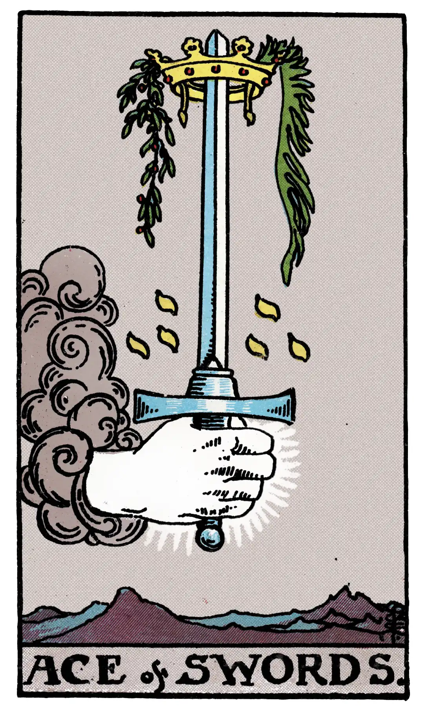

Ace of Swords

A.E.W.
Upright
Triumph, the excessive degree in everything, conquest, triumph of force. It is a card of great force, in love as well as in hatred. The crown may carry a much higher significance than comes usually within the sphere of fortune-telling.
Additionally
Great prosperity or great misery.
Recurrence
2 - Trickery.
3 - Small success.
4 - Favourable chance.
Reversed
The same, but the results are disastrous; another account says – conception, childbirth, augmentation, multiplicity.
Additionally
Marriage broken off, for a woman, through her own imprudence.
Recurrence
2 - Enemies.
3 - Debauchery.
4 - Dishonour.
S.L.M.M.
Upright
Triumph, Fecundity, Fertility, Prosperity
Reversed
Embarrassment, Foolish and Hopeless Love, Obstacle, Hindrance.
Description
A hand issues from a cloud, grasping as word, the point of which is encircled by a crown.